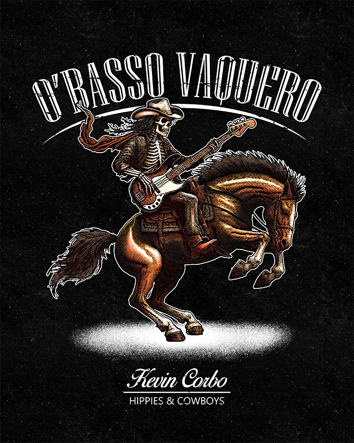

Kevin Corbo - O'Basso Vaquero Graphic
This is a guy from the band Hippies & Cowboys who I had previously worked on another version of this graphic for about a year beforehand. He reached out looking to get an updated and cleaned up version of it, which was completely cool with me, as I had really harnassed a lot of my skillset with a lot of new knowledege ever since our last project that we had worked on together. I drew up this concept and he absolutely loved it. This graphic ended up being used on a black ringer tee, as well as some stickers. This was another wonderful opportunity and I was very happy to be able to satisfy Kevin Corbo with this project.